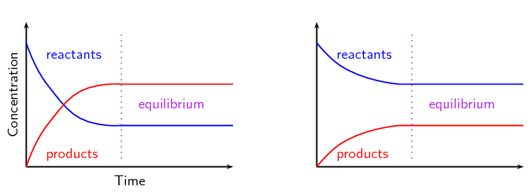
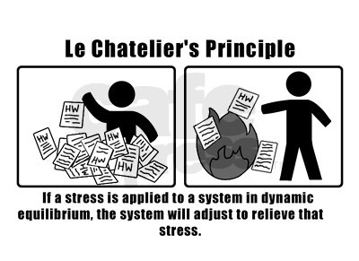
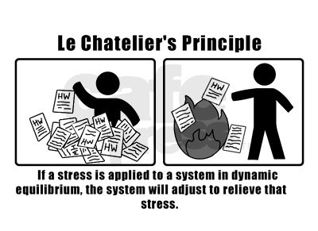

Chemical Equilibrium
Definitions

Equilibrium is when the forward rate is equal to the backwards rate of the reaction.
In theory, every reaction is reversible, but some are just really really hard to reverse (These go to completion)
Examples of these include percipitate forming reactions, and gas forming reactions.
| Product Favored: | [Product] > [Reactant] at equilibrium (Higher concentration of products than reactants) |
| Reactant Favored: | [Reactant] > [Product] at equilibrium |
| Neither: | [Reactant] = [Product] at equilibrium |
Equilibrium Constant
Let's assume the following reaction:
We can define the equilibrium constant (K) as the following value:
Here are some facts about K:
aA + bB ⇌ cC + dD
(Lowercase represents coefficents, uppercase represents reactants/products)We can define the equilibrium constant (K) as the following value:
K = [C]c[D]d / [A]a[B]b
Here are some facts about K:
- K only cares about concentrations at equilibrium, not inital concentrations
- K changes with temperature
- K is unitless (It's just a number!)
- If K > 1 reaction is product favored, if < 1 is reactant favored, if = 1 neither
- Omitt pure solids and liquids from calculating K (Ie solid carbon and water)
Extra Credit Fact: In WWI germany was in need for ammonia to produce explosives (and fertilizer, but mostly explosives).
The solution? They harvested the ammonia from bird poop in Argentina, at least until the Allies caught on to what they were
doing and formed a blockade.
In order to obtain more ammonia, Fritz Haber (a Jewish German scientist) invented the Haber–Bosch process, which allowed production of ammonia from nitrogen and hydrogen gas in lab. For this, he won the Noble Prize in 1918, and later the Fritz Haber Institute of the Max Planck Society became named after him.
In order to obtain more ammonia, Fritz Haber (a Jewish German scientist) invented the Haber–Bosch process, which allowed production of ammonia from nitrogen and hydrogen gas in lab. For this, he won the Noble Prize in 1918, and later the Fritz Haber Institute of the Max Planck Society became named after him.
Examples
For the reaction [Cu(NH3)4]+ (aq) ⇌ Cu2+ (aq) + 4NH3 (aq), find the expression for K
Answer:
Kc = [Cu2+][NH3]4 / [Cu(NH3)4+]
Since we're using concentrations to calculate the K value, we can optionally call it KcK can also be referred to as Keq
For the reaction Ni (s) + 4CO (g) ⇌ Ni(CO)4 (g), find the expression for K
Answer:
K = [Ni(CO)4] / [CO]4
Note that Ni (s) is not included in the calculation as it's a pure solid.
For a reaction at 127 C, [NH3] = 0.031 M, [N2] = 0.85 M, [H2] = 0.0031 M
N2 (g) + 3H2 (g) ⇌ 2NH3 (g)
Find the following:
- K at 127 C
- K for reverse reaction at 127 C
- K for 1⁄2N2 (g) + 3⁄2H2 (g) ⇌ NH3 (g)
Answer:
-
Kc = [NH3]2 / [H2]3[N2]
Plug in the values and you should get K = 38000 -
If you reverse the reaction and get the K expression, you should get
Kc = [H2]3[N2] / [NH3]2
You should now get K = 2.6 * 10-5.
NOTE: This is the reciprocal of the K value in 1. Can you see why? -
If you get the expression for this, you should get
Kc = [NH3] / [H2]3/2[N2]1/2
You should now get K = 190.
NOTE: This is the square root (1/2 power) of the K value in 1. Can you see why?
Equilibrium Expressions Involving Pressures
For gases, you can calculate a K from partial pressures. Lets assume
Simple right? This should also be true:Kc = Kp
aA (g) + bB (g) ⇌ cC (g) + dD (g)
So you can now write the following expression:Kp = PCc PDd / PAa PBb
Where KA would be the partial pressure of A, etc...Simple right? This should also be true:
Kc = Kp
Heterogeneous vs Homogenous Equilibria
Homogenous: All reactants and products are the same state (Ie all solid)
Heterogeneous: Not homogenous
REMEMBER: omitt pure solids and liquids when considering this.
Heterogeneous: Not homogenous
REMEMBER: omitt pure solids and liquids when considering this.
Applications of Equilibrium Constant
K can be used to determine if reaction is product or reactant favored.
Remember, K does not affect the time it takes for a reaction to occur, only what happens at equilibrium. Time of reactions deals with kinetics, which is not part of this section!
Remember, K does not affect the time it takes for a reaction to occur, only what happens at equilibrium. Time of reactions deals with kinetics, which is not part of this section!
Reaction Quotient (Q)
Calculate it the same way as K, except the concentration values can be at any point in time, not just equilibrium.
Q tells us which way the reaction will proceed:
Q tells us which way the reaction will proceed:
- If Q > K reaction goes to the left
- If Q < K reaction goes to the right
- If Q = K reaction at equilibrium
Indirectly Determining the Constant
Lets say you have 2 reactions that you can add together to get a target reaction, ie:
(1) A + 2B ⇌ C + D
(2) D + E ⇌ A + F
Target: 2B + E ⇌ C + F
Lets say you know the K values of (1) and (2). Then the K value of the target would be the product of the 2 K valuesKtarget = K1 * K2
If you don't understand why, write out the formulas and do the mathLeChatelier's Principle
Applying stress makes equilibrium shift in direction to reduce stress. For example, if you
add too much product, the reaction will form more reactants to relieve the excess stress.

Stress: Can be in the form of a temperature change, pressure change or concentration change.
Above reaction is exothermic, adding heat makes it go to the left
Increasing pressure will cause the reaction to shift in the direction that makes less moles of gas. If there are the same number of moles of gas on each side, the equilibrium doesn't shift.

Stress: Can be in the form of a temperature change, pressure change or concentration change.
(ΔT, ΔP, or Δ[A])
ΔT: Change in Temperature
Think of "heat" as a reactant/product. If you add too much heat, the reaction will go in the direction that uses up heat. (If you remove heat, it produces more). This depends on if the reaction is exothermic or endothermic:A + B ⇌ C + Heat
Extra Credit Fact: Gases dissolving is usually an exothermic process. For example, oxygen
dissolving in water:
O2 (g) ⇌ O2 (aq) + Heat
Some factories use water to use as a coolant in various industrial processes (Which is why many are built beside rivers or other bodies of water). Some factories are lazy and dump the hot waste water straight into rivers, which has caused mass fish die-offs. Why? The hot water shifts the equilibrium above to the left, which reduces the amount of dissolved oxygen in the water. Without oxygen, the fish asphyxiate.ΔP: Change in Pressure
You can change pressure by changing volume, removing a gas or adding an inert gas. (All of these will cause a ΔQ except adding an inert gas, which only changes total pressure).Increasing pressure will cause the reaction to shift in the direction that makes less moles of gas. If there are the same number of moles of gas on each side, the equilibrium doesn't shift.
Δ[A]: Change in Concentration
If you remove a product/reactant, the reaction will shift towards the direction that makes more of that product/reactant. For example, if you remove some product, the reaction will shift to the right to make more product. If you add some product, it will shift to the left to get rid of the excess product.Catalyst
Catalysts lower the activation energy (Ea) in both directions, so rates change equally, thus
does not affect Q or K. (The reaction just gets to equilibrium faster, but once again, that's a kinetics problem)
Next: Acids and Bases